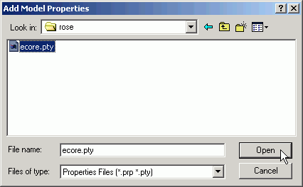

When a Rational Rose class diagram is used as the source for EMF model generation, there are a number of pieces of information about each package that are not expressed in the UML, requiring the generator to infer them from the package name. Instead, it is preferable to store them directly in the Rose model as model properties.
To show how this is done, we will use a slightly modified version of the library model from the Generating an EMF Model tutorial: library.mdl.
The model elements must belong to a package. When the model is converted to Ecore, if there are any elements that are not contained in a package, a package will be created for them, and its properties will be inferred from the name of the model.
Ecore's additional Rose model properties are defined in a property file, "ecore.pty". Before we can set them, we must add them to Rose's vocabulary.
The Ecore package properties can now be edited.

The properties that can be set divide into two groups: properties of the Ecore model itself, and properties of the GenModel that drives code generation.
The Ecore properties are as follows:
packageName The name of the Ecore package, if different from the Rose/UML name. If not set, the Rose package name, converted to lower case, is used. nsPrefix The namespace prefix for the package's XML namespace, used in a qualified name to select the package's namespace. If not set, the value of packageName, qualified by basePackage below, is used. nsURI The unique URI reference that indentifies the package's XML namespace. If not set, the value of nsPrefix, with "http:///" prepended, ".ecore" appended, and all "/"s converted to "."s, is used. annotation Any annotations to be attached to the package. Annotations provide a flexible mechanism for attaching additional information to Ecore model elements. An annotation is identified by a source, a unique string that's typically a URI, and includes as details key/value string pairs. It is specified as follows:
http://www.example.org/sourceURI key1='value1' key2='value2' ...
The GenModel properties are as follows:
prefix The prefix used in the names of generated package, factory, switch, adapter factory (and more) classes for this package. If not set, the value of packageName, with its first character capitalized, is used. basePackage The Java package of which the generated package is to be a subpackage. This allows code with globally unique package names to be easily generated (without modeling empty, nested base packages). If not set, no default is used.
In addition to these package properties, the Ecore property file defines properties for classes, attributes, relations, and operations, all of which can be found on the "Ecore" tabs of their respective Specification dialog boxes.